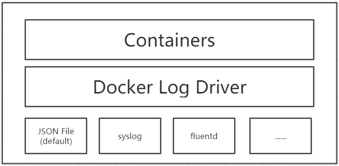
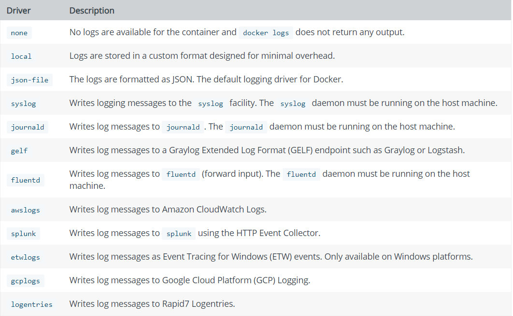
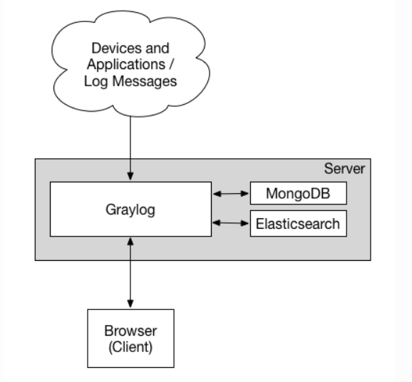
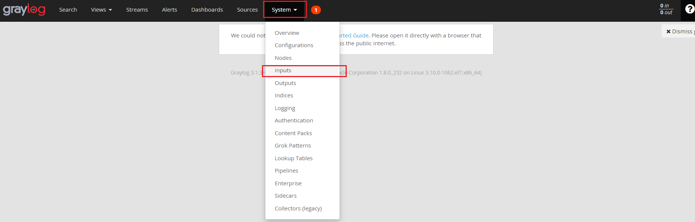
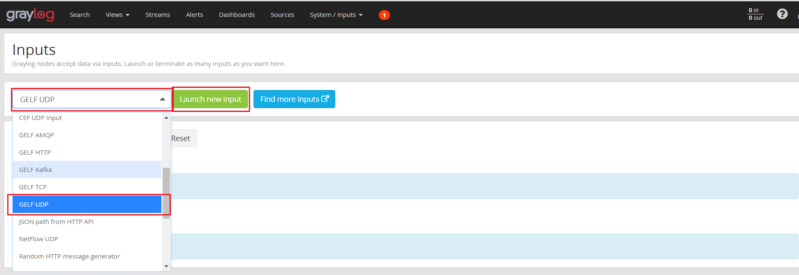
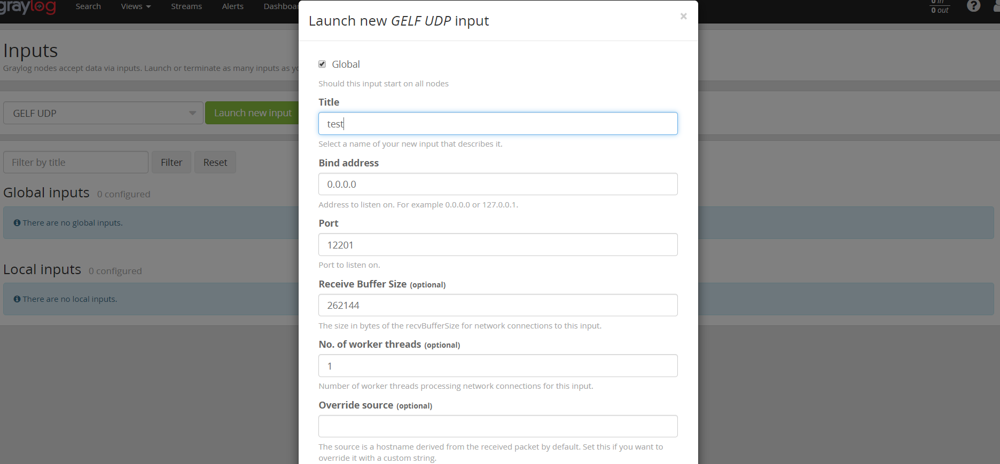
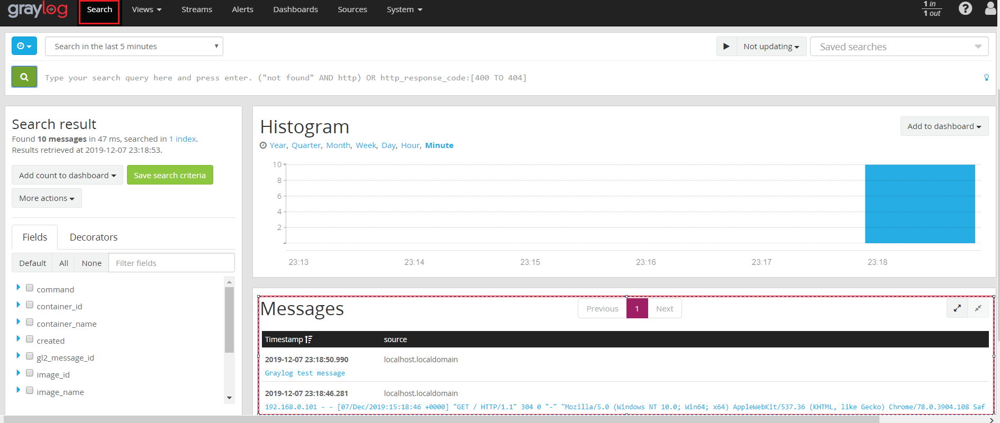

原文连接:https://www.cnblogs.com/coding-diary/p/12093294.html
Docker日志
当一个容器启动的时候，它其实是docker deamon的一个子进程，docker daemon可以拿到容器里面进程的标准输出，然后通过自身的LogDriver模块来处理，LogDriver支持的方式很多，默认写到本地文件，也可以发送到syslog等。

Docker会默认收集应用程序的标准输出到一个json.log文件中，以一行一条JSON存储数据，文件的格式如下：
{"log":"root@74205cdc7b53dd:/#ls\r\n","stream":"stdout","time":"xxx.155834526Z"}
{"log":"root@74205cdc7b53dd:/#ls\r\n","stream":"stdout","time":"xxx.255834528Z"}
Docker的这种日志存储方式可以在容器启动时通过指定log-driver进行配置，支持的log driver如下：

Graylog日志管理
Graylog是一个开源的完整的日志管理工具，功能和ELK类似。Docker原生支持graylog协议，Graylog官方也提供了对Docker的支持，二者可以无缝衔接。Graylog官方提供了Dockerfile可以在Docker上部署日志系统，同时也提供了docker-compose.yml文件来快速部署整个graylog栈。
详细内容可以通过http://docs.graylog.org/en/3.1/pages/installation/docker.html 来查看。

Graylog部署
1.在当前用户目录下创建graylog目录作为部署的工作目录：
$ mkdir graylog
$ cd graylog
2.初始化目录和配置文件
$ mkdir -p ./graylog/config
$ cd ./graylog/config
$ wget https://raw.githubusercontent.com/Graylog2/graylog-docker/3.1/config/graylog.conf
$ wget https://raw.githubusercontent.com/Graylog2/graylog-docker/3.1/config/log4j2.xml
#另外由于Graylog以ID 1100 定义了用户和用户组，
#导致Graylog在启动的时候可能会报config目录权限不足的错误，可以通过以下命令来解决
chown -R 1100:1100 ./graylog/config
3.修改配置文件， 上一步获得的graylog.conf文件是官方提供的默认配置，用户可以根据需要进行配置，比如配置中时区默认为UTC时区，可以将其改为中国时区
root_timezone = Asia/Shanghai
4.准备docker-compose.yml文件
version: '3'
services:
# MongoDB: https://hub.docker.com/_/mongo/
mongo:
image: mongo:3
networks:
- graylog
volumes:
- mongo_data:/data/db
# Elasticsearch: https://www.elastic.co/guide/en/elasticsearch/reference/6.x/docker.html
elasticsearch:
image: docker.elastic.co/elasticsearch/elasticsearch:7.5.0
volumes:
- es_data:/usr/share/elasticsearch/data
environment:
- http.host=0.0.0.0
- transport.host=localhost
- network.host=0.0.0.0
- "ES_JAVA_OPTS=-Xms512m -Xmx512m"
ulimits:
memlock:
soft: -1
hard: -1
deploy:
resources:
limits:
memory: 1g
networks:
- graylog
# Graylog: https://hub.docker.com/r/graylog/graylog/
graylog:
image: graylog/graylog:3.1
volumes:
- graylog_journal:/usr/share/graylog/data/journal
- ./graylog/config:/usr/share/graylog/data/config
environment:
# CHANGE ME (must be at least 16 characters)!
- GRAYLOG_PASSWORD_SECRET=somepasswordpepper
# Password: admin
- GRAYLOG_ROOT_PASSWORD_SHA2=8c6976e5b5410415bde908bd4dee15dfb167a9c873fc4bb8a81f6f2ab448a918
- GRAYLOG_HTTP_EXTERNAL_URI=http://192.168.0.103:9000/
networks:
- graylog
depends_on:
- mongo
- elasticsearch
ports:
# Graylog web interface and REST API
- 9000:9000
# Syslog TCP
- 1514:1514
# Syslog UDP
- 1514:1514/udp
# GELF TCP
- 12201:12201
# GELF UDP
- 12201:12201/udp
networks:
graylog:
driver: bridge
# Volumes for persisting data, see https://docs.docker.com/engine/admin/volumes/volumes/
volumes:
mongo_data:
driver: local
es_data:
driver: local
graylog_journal:
driver: local
5.运行 “docker-compose up”启动服务， 服务正常启动后就可以通过http://ip:9000 进行访问graylog的Web界面，默认用户admin/admin。

Graylog配置日志收集
Graylog的日志收集通过定义input来完成，在Graylog的Web管理页面的System tab下可以选择定义input来对日志进行收集

进入input页面后选择input的类型，比如定义GELF UDP的input:

选择完成后点击 “Lanch new input”，就会进入详细的input配置，配置完成后保存就可以了

保存后一切正常的话，input就会进入RUNNING状态，这时就可以往这个input里面发送数据了，点击“Stop input”，input就会停止，数据的接收也会停止，“Stop input”会变成“Start input”，需要接受数据的时点击启动就可以了。

配置Docker容器发送数据到Graylog
配置Docker容器发送数据到Graylog时可以在运行docker run命令启动容器的时候加上如下参数：
docker run --log-driver=gelf \
--log-opt gelf-address=udp://graylog服务器地址:12201 \
--log-opt tag=<当前容器服务标签，用来供graylog查询的时候进行分类> \
<IMAGE> <COMMAND>
具体示例：
docker run -d \
--log-driver=gelf \
--log-opt gelf-address=udp://localhost:12201 \
--log-opt tag="{{.ImageName}}/{{.Name}}/{{.ID}}" \
busybox sh -c 'while true; do echo "Graylog test message"; sleep 10; done;'
如果容器通过docker-compose命令启动可以在docker-compose.yml文件中加入以下配置：
logging:
driver:"gelf"
options:
gelf-address:"udp://graylog服务器地址:12201"
tag:"容器服务标签"
具体示例：
version: '2'
services:
nginx:
image: nginx:latest
ports:
- "80:80"
logging:
driver: "gelf"
options:
gelf-address: "udp://localhost:12201"
tag: nginx-service
日志发送配置好之后就可以在的Search tab下搜索产看日志信息
